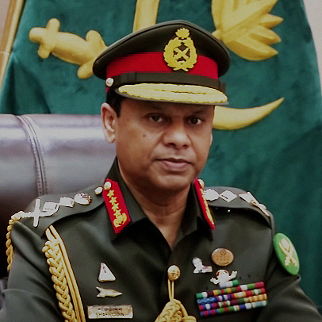

Photo of Chief of Army Staff

General S M Shafiuddin Ahmed
SBP, BSP, BGBM, PBGM, BGBMS, psc, G
General S M Shafiuddin Ahmed, SBP, OSP, ndu, psc, PhD has taken over the Command of Bangladesh Army as the 17th Chief of Army Staff on 24 June 2021.
The General was born on 01 December 1963 in a reputed Muslim and Freedom Fighter Family in Khulna. He was commissioned with 9th BMA Long Course in the Corps of Infantry on 23 December 1983 in Bangladesh Army. He has been maintaining a phenomenal military career having the blend of Command, Staff and Instructional experiences at different levels with Bangladesh Armed Forces and Overseas Peacekeeping Mission.
His diversified command credential at Army level includes commanding Army Training and Doctrine Command (ARTDOC); at Division and Brigade level, he commanded the only Logistics Formation of Bangladesh Army, an Infantry Division and an Infantry Brigade. Besides, he also commanded an Infantry Battalion and the 1st Bangladesh Battalion (only one of its kinds) at Bangladesh Military Academy. He also has an iconic experience of commanding multinational forces in a start-up peacekeeping mission as the pioneer Deputy Force Commander in the United Nations Multidimensional Integrated Stabilization Mission in the Central African Republic (MINUSCA).
In his long illustrious career, he has served as the Director General of Bangladesh Institute of International and Strategic Studies (BIISS), and Senior Directing Staff (Army) of National Defence College (NDC), Bangladesh. General Shafiuddin has served as Brigade Major of an Infantry Brigade and Grade-1 Staff Officer at the Formation Headquarters. He was also the Adjutant of Barishal Cadet College. The General has also served as the Chief of Doctrine Division in ARTDOC and Director of Military Training Directorate at the Army Headquarters.
General Shafiuddin has attended several military courses both at home and abroad. He is a graduate of Defence Services Command and Staff College (DSCSC), Mirpur, Bangladesh. He attended International Symposium Course in National Defence University (NDU), China and Defence and Strategic Studies Course at the same University. He is also a NESA graduate from NDU, Washington DC. Besides, General Shafiuddin led military delegations to USA, China, India, Japan, Kuwait, Indonesia, Nepal, Singapore and Sri Lanka, and held bilateral talks with the senior military leaderships on regional security and defence cooperation.
General Shafiuddin attained three Master Degrees on varied disciplines. He was awarded MPhil degree with First Class on Development and Security Studies from Bangladesh University of Professionals (BUP). He obtained Masters in Defence Studies (MDS) from National University, Bangladesh. He has also obtained Masters of Business Administration (MBA) from Dhaka University where he secured 1st position and received MIST Gold Medal. He obtained a Doctor of Philosophy from Bangladesh University of Professionals (BUP) through his research on Development and Security Studies.
General Shafiuddin is a widely travelled person who has visited many countries around the globe. The Sports loving General is a keen Golfer. Happily married to Noorjahan Ahmed, the General is a proud father of two daughters, Dr. Sheikh Rubaiya Ahmed and Sheikh Rufaida Fatima.